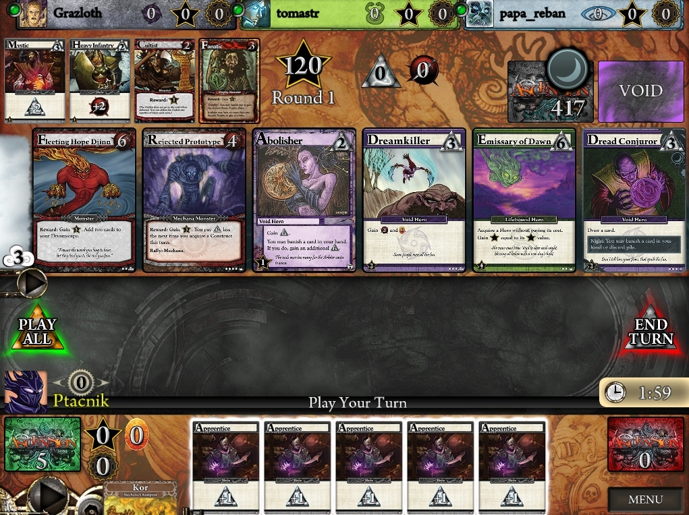
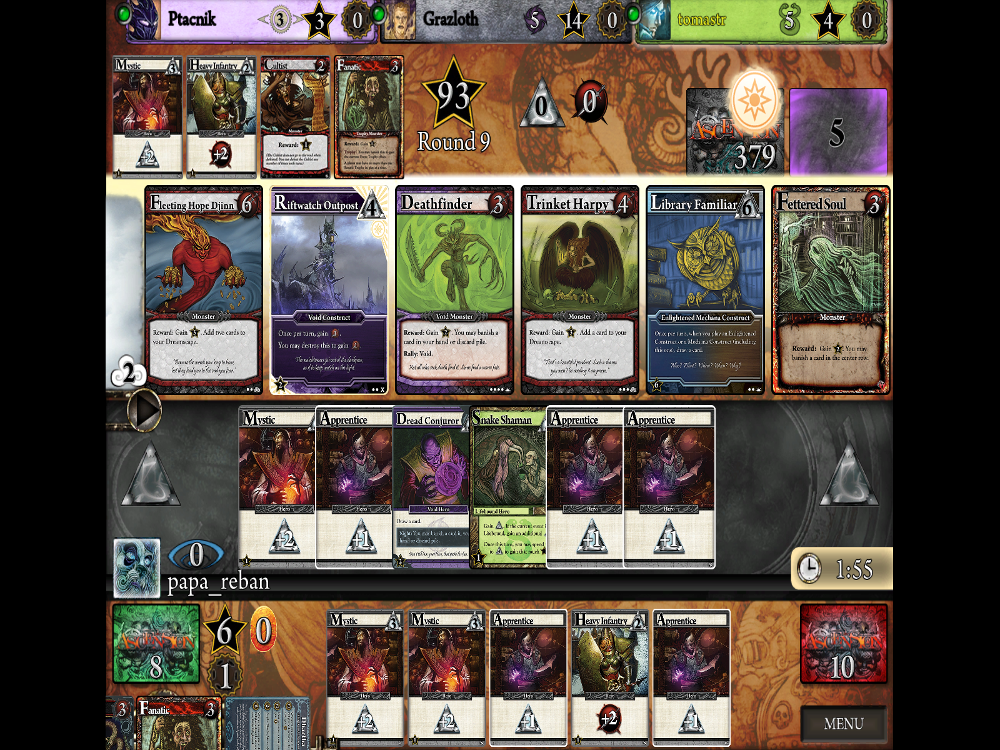

Description of my new site.
January 1, 0001
+— +title: “Testujeme Ascension: Deckbuilding Game na Steame” +date: 2018-05-01T12:57:24+02:00 +draft: false +— +Dnes sme sa rozhodli, že je čas otestovať si Ascension ako aplikáciu na Steame. Hra Ascension: Deckbuilding Game je v 51% zľave do 2.5.2018, takže ešte máte čas nakúpiť si hru aj Vy. + +Hra Ascension na Steame bola ocenená ako 2011 Golden Geek award winner (Best Mobile/Handheld Game). To už sa možno zdá celkom dávno, ale hra je stále pomerne populárna, a tým, že aj mne sa darí rozširovať hru medzi kamarátov, je to nenápadné dostávanie hry Ascension do sveta. + +Tak či onak, čo sa týka počítačovej aplikácie, musím uznať, že sa mi zdá pomerne zanedbaná. + +Ako môžeme vidieť na obrázku nižšie, hra má pomerne zemité farby, čo by nemuselo byť chybou, ale grafika samotná je príliš jednoduchá. Obrázok pochádza priamo z dejúcej sa hry mojich kamarátov, ktorí mi to oscreenovali. Na obrázku vidíme 4 nicky a ich avatary. Výhodou aplikácie na Steam (narozdiel od aplikácie na mobil) je, že obsahuje všetky dosiaľ vydané kartové expanzie a keď človek zaplatí za danú hru, už nemusí nič riešiť. Pri aplikácii na mobil je nevýhoda, že človek musí doplácať za expanzie - avšak hra na mobil je zase zadarmo. Potom záleží na človeku, či chce všetky expanzie, alebo mu stačí základná. + + + +Každopádne, nastavenia hry sú troška neúplné: nedokážeme nastaviť rozlíšenie hry inak, ako je na obrázku 2. To znamená, že človek má vždycky buď hru nepríjemne roztiahnutú alebo má čierne okraje. Na druhú stranu je fajn, že dokážeme meniť hudbu a design hracej dosky podľa toho, akú expanziu máme radi, alebo aká hudba z tej-ktorej expanzie sa nám páči. + + + +Hrateľnosť hry je dobrá, ak nepočítame nevýrazné určenie, kto je na ťahu, alebo zvláštne animácie niektorých kariet a zvukvé efekty. Inak beriem ako výhodu, že sa karty dajú zväčšovať. Ale na začiatku som s tým mala problém, pretože sa mi to zdalo veľmi neintuitívne, a to beriem ako nevýhodu. Človek musí zväčšovať kartu jedným tlačidlom na myši a druhým ju zase zmenšiť. A to je nepohodlné + +Napriek všetkým týmto problémom uznávam hru ako fajn - príjemná náhrada za iné kartové hry na PC. Hru testujem pomerne krátko, a nedokážem určiť, či ma bude na PC baviť dlhoobo. + +Avšak predpokladám, že stolná verzia s reálnymi kartami ma baviť bude. Predsa len je to niečo iné držať v ruke reálne karty. + +Navyše je náročnejšie hrať sám s kartami v rukách. V počítačovej verzii aplikácia upozorňuje hráča, že ešte neodohral nejaké herné efekty a podobne. Možno je dobrá táto aplikácia pre začiatočníkov, alebo pre tých, ktorým sa nechce kupovať drahé krabicové verzie hry.